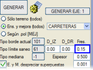
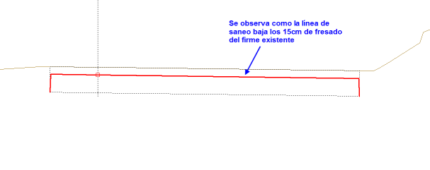
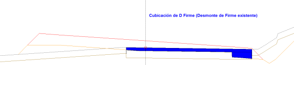
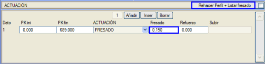
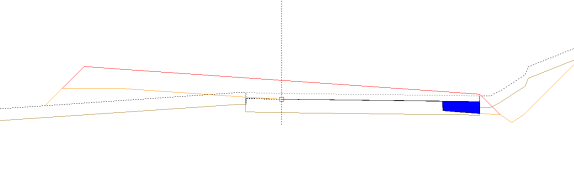

| |
|
ÖN KAZIMALI (FREZAJLI) GENİŞLETME VE İYİLEŞTİRME PROFİLLERİ
|
Aşağıdaki adımlarda Fres (mevcut üstyapının ön kazıması) kutucuğunun kullanımına bir örnek görelim: Genişletme ve İyileştirme profillerini 15cm'lik bir kazıma ile oluşturacağız. 
Arazi profillerinde elde edilen sonuç aşağıdaki gibidir. Zayıf zemin kazısı yüzeyinin 15cm'lik kazıma kadar nasıl düştüğü görülmektedir. 
Genişletme ve İyileştirme menüsünün tamamını tanımladığımızda ve hesaplamaları yaptığımızda, yapılan ön kazıma nedeniyle programın bize aşağıdaki resimde gösterildiği gibi kazımadan kaynaklanan bir Mevcut Üstyapı Kazısı (D Firme) kübajı verdiğini gözlemleyebiliriz: 
Programın bize sunduğu bir diğer olasılık da, bu kazımanın zaten hesaba katıldığını ve artık mevcut üstyapı kazısının bir parçası olmadığını düşünmemizdir. Bu durumda, genişletme ve iyileştirme profillerini Enkesitler menüsünden kazıma yapmadan (Fres) elde edebilir ve bunu Güçlendirme Tabloları menüsünden Profili yeniden yap ve kazımayı listele komutu aracılığıyla yapabiliriz. 
İlgili hesaplamaları yaptığımızda, aşağıdaki şekilde gösterildiği gibi bir D Firme, yani mevcut üstyapı kazısı metrajı elde ederiz: 
|